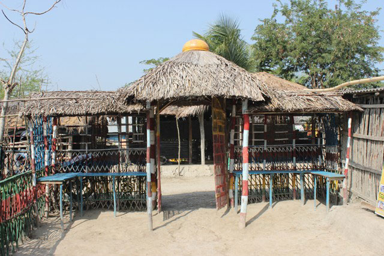
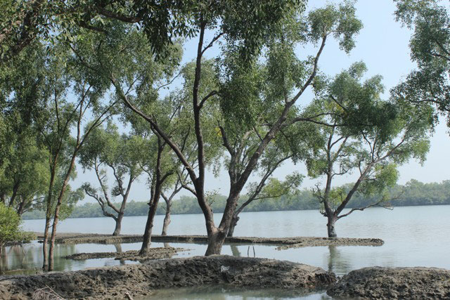

উরালমন আদিবাসী গ্রাম ও নৌকা ভ্রমণ সাইটটি সুন্দরবনের কোল ঘেষে দাতিনাখালী মুন্ডাপাড়াতে অবস্থিত । এটি বুড়িগোয়ালীনি ইউনিয়নের অন্তর্গত এবং নীলডুমুর বাজারের সন্নিকটে অবস্থিত।


এই ইকোট্যুরিজম কেন্দ্রে আদিবাসী মুন্ডা সম্প্রদায়ের নিজেস্ব ভাষায় গান-বাজনা ও নাচ এবং অন্যান্য সাংস্কৃতিক কার্যক্রম দেশি বিদেশি পর্যটকদের উদ্দেশ্যে প্রদর্শন করা হয়। এখানথেকে খুব সহজেই সুন্দরবন ভ্রমণ করা যায়। ইকোবোটে সুন্দরবনভ্রমন খুবই আনন্দদায়ক। এখান থেকে সুন্দরবন কলাগাছি কেন্দ্র যাওয়া যায়। এই সাইটে থাকা-খাওয়া, গান-বাজনাসহ সব ইকোট্যুরিজম সুবিধা রয়েছে। এই সাইটটিও রিলিফ ইন্টারন্যাশনালের সহযোগিতায় নির্মিত হয়েছে।
উরালমন আদিবাসী গ্রাম ও নৌকা ভ্রমণ সাইটটি সুন্দরবনের কোল ঘেষে দাতিনাখালী মুন্ডাপাড়াতে অবস্থিত । এটি বুড়িগোয়ালীনি ইউনিয়নের অন্তর্গত এবং নীলডুমুর বাজারের সন্নিকটে অবস্থিত।